| |
Fury 325 Review
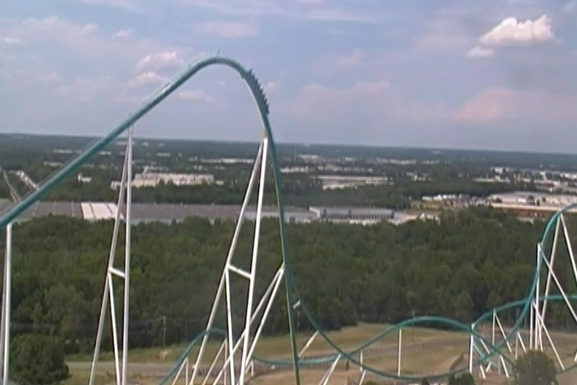
We're here at Carowinds, where we will be riding their star attraction, and one of the best coasters in the country, Fury 325. Yeah. This ride is good. It's REALLY F*CKING GOOD!!! It's one of the few B&M Giga Coasters, as well as just flat out one of the few Giga coasters ever built. There's very few of those rides built. And while I may not be a huge fan of the B&M Hyper Coasters (there's one located right here at Carowinds), Fury 325 is just so damn good. So yeah. Let's just get riding and see what the hype is. The gates open, and you better get your ass in the seats as the operations here are REALLY FREAKING FAST!!! Down go the clamshells, check, clear, dispatch. Seriously, we dispatch right as the other train heads down the first drop. So off we go. We climb up the monsterous lifthill, just climbing right up in the sky. Take a good look to your left, and you can see the skyline of Charlotte. So that's cool. But it's a fast lifthill, and we're already up at the top. We lean down, and begin to fall. Seriously, it's a damn near vertical drop, just falling straight to the ground. Honestly, it's very similar to the first drop of Millenium Force. Except this ride is MUCH better than Millenium Force (Sorry Cedar Point fanboys). So yeah, you just fall down to the ground, get some decent airtime, and just begin to FLY!!! No really. It just begins to ROAR on by. We go into this weird sort of banked turnaround hill, and we don't hesitate for a second. We just FLY on through it, not even losing any speed. There's not too many laterals in there, but we just keep on roaring with speed. OK. It sounds very much like Millenium Force. This isn't a problem, as I really like Millenium Force. But where's the better part? Well, we roar down that drop, and then IMMEDIETLY go into a really fast low to the ground turn. OK, it's above the ground, but we just FLY on through, and get some really good laterals. And yeah. We just head into another low to the ground turn, just PLOWING through it. Seriously, this thing does NOT lose speed. It just whips right through it, getting some good laterals, and if we're in the front row, you're getting a facelift due to just how fast we're going. We then head into a funky new element that's called a Treble Clef. It seems...interesting. We just head up into this big curved hill. We lose a little bit of speed here, but are still going really fast. But there's something intersting at the top. You see, you get a nice pop of floater air here. However, you never unbank at the top. You're still completely banked at the top of this thing. So yeah. You get lateral airtime. AWESOME!!! And when you drop back down, you unbank, so you sort of get some more laterals as you unbank while falling to the ground. I can't think of any other ride, where unbanking actually gets you laterals, especially when you're doing it in the middle of a drop. So yeah. We're getting all our speed back. We're still roaring fast bitches. Wave hello to all the people on the path right in front of us as we dip underneath that and TAKE THE TUNNEL!!! Yeah, we're not in there for very long since we're going so damn fast, but this is still really cool. We fly on out, rise up into the air, and fly through another one of those banked turns. These things are agressive, and I F*CKING LOVE THEM!!! So yeah. We fall right down to the ground, and head into an airtime hill. On the one hand, we go through a heavy set of trims. You really feel these trims, and they defeinetly slow us down. Aww. Lame =( But there is some good news. You still get some really good airtime. You just fly right out of your seat. So yeah. Unlike on Raging Bull, the trims here do NOT kill the airtime, and it still is going pretty fast. Just not LIGHTNING fast like before. We then head into this upward helix that...yeah. It definetly kills a little bit of the speed, but we're still going fairly fast. And hey. There are even a few headchoppers with the supports. But hey. We dip back down to the ground and head right into another airtime hill. WEE!!! AIRTIME!!! Head down another turn at the bottom, get some laterals, and head right into another airtime hill. No really. This ride has some really good airtime! =D We head around another banked turn afterwards, rise on up, get a nice little pop of airtime, and right into the brake run. Aww, but this ride is so damn good. No really. It IS that damn good. It is without a doubt, my favorite B&M. I know there's a lot of complaints about how B&M doesn't make crazy or intense coasters like they used to, and how their newer coasters aren't nearly as forceful as their old school classic coasters. And while that's generally true, there are a few exceptions and Fury 325 is a great example that if a park requests it, they can still make a totally batsh*t insane ride. I mean, laterals, good airtime, and enough speed to give you a facelift, it's just one of the craziest coasters out there. Honestly, I'm curious to see how good their other Giga Coasters at Canada's Wonderland and Kings Island are after how impressed I was with Fury 325. I can not recommend this coster enough. It really is an INSANE ride.
10/10
Location: Carowinds
Opened: 2015
Built by: B&M
Last Ridden: July 25, 2019
Here's my raw footage video of Fury 325.
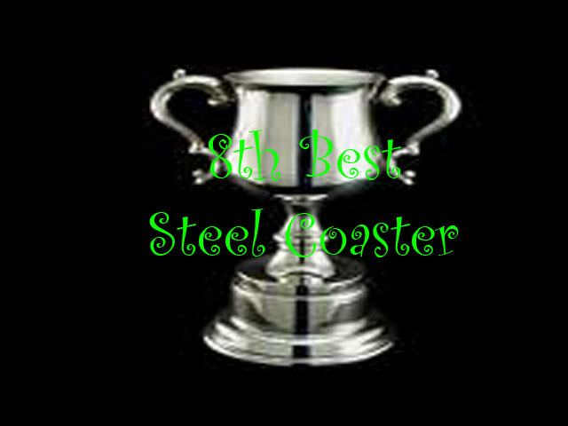
Fury 325 Photos
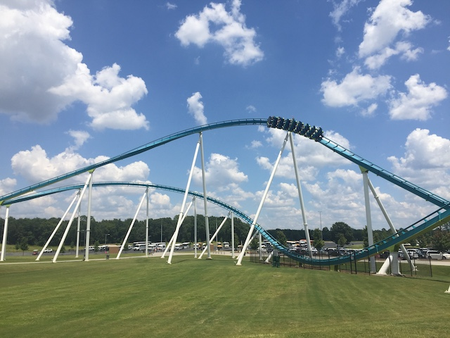
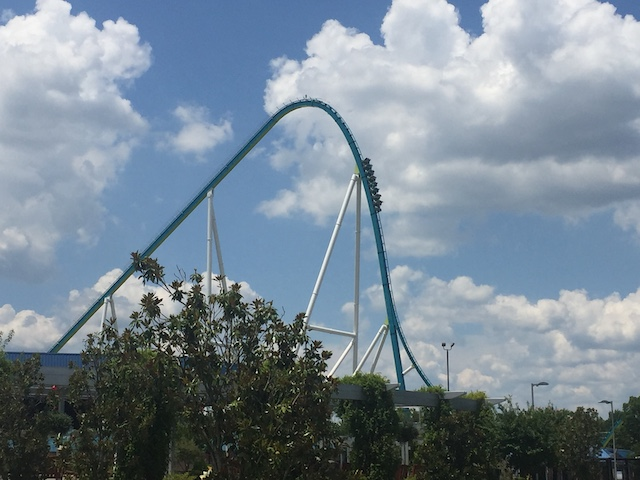
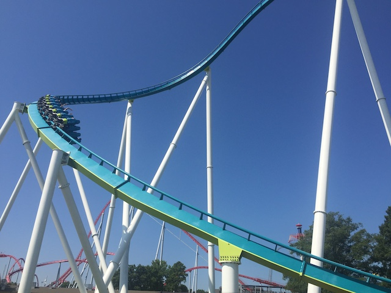
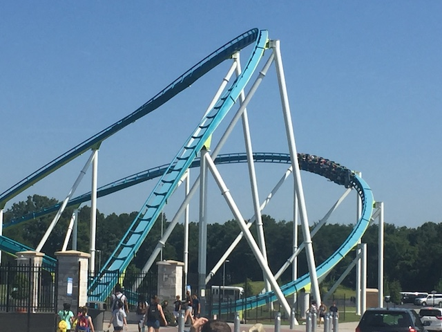
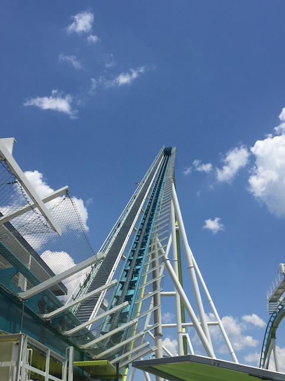
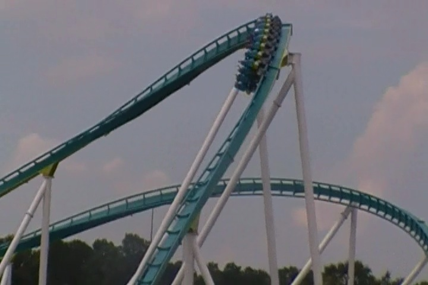
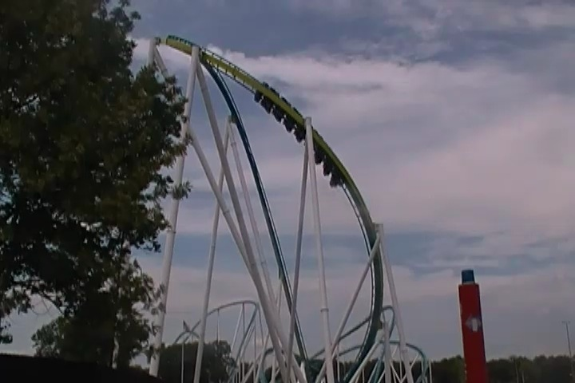
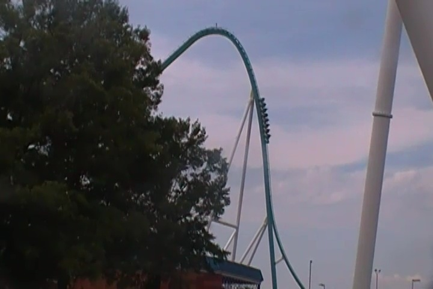
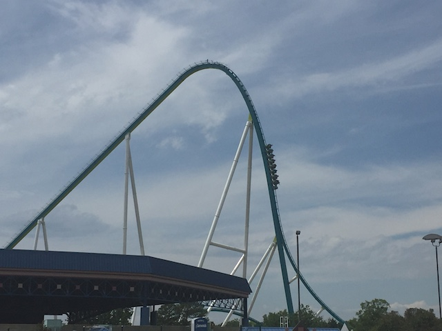
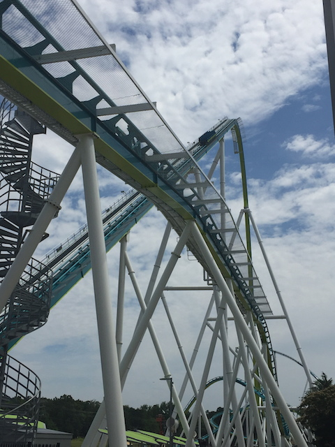
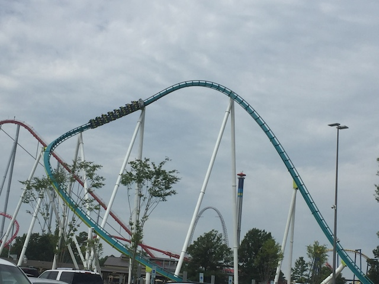
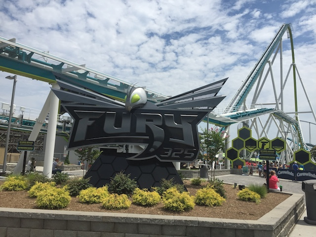
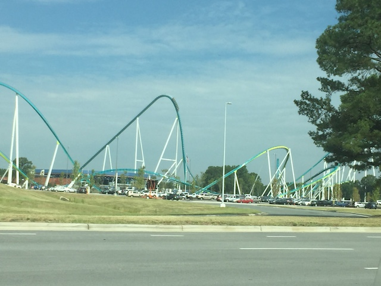
Home
|